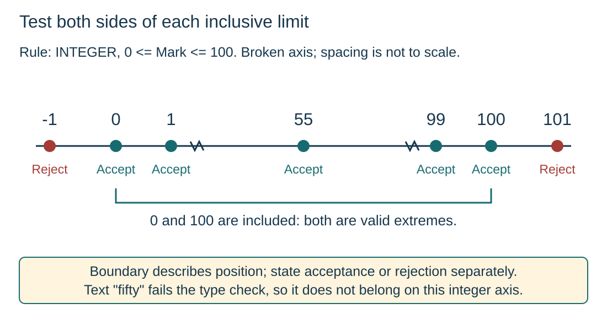

Distinguish ordinary, invalid and extreme values
Visual overview
Test both sides of each inclusive limit

Visual transcript
- The input rule accepts integers from 0 to 100 inclusive.
- -1 and 101 are outside the permitted range and are rejected; 0, 1, 55, 99 and 100 are accepted.
- 0 and 100 are valid extremes; 55 is an ordinary normal value. Boundary testing includes valid and invalid neighbours.
- The axis is broken between the limit details and the ordinary example; spacing is not to scale. Text "fifty" fails the integer type check before the range test.
Use the rule to determine validity
Normal data are valid examples representative of ordinary use. Abnormal data violate the supplied type, format or range rule and require the specified rejection or error response. Valid extremes are the accepted endpoints. Boundary testing examines a limit and useful neighbouring positions; always state whether each chosen value is valid.
Separate a category from a test’s purpose
For integer marks from 0 to 100 inclusive, 55 is an ordinary valid value; 0 and 100 are accepted extremes; -1 and 101 are invalid neighbours. The syllabus groups extreme/boundary terminology: do not turn the labels into a rigid rule that an out-of-range neighbour cannot serve a boundary test. Its validity and testing purpose are different properties.
Keep input type and range checks distinct
A raw input field could receive the text fifty, which fails its integer-input rule. A variable already declared INTEGER cannot itself hold that string. Testing the raw interface’s parsing and testing the range of an already typed value are different tasks. State which interface is being tested before choosing an abnormal example.
Core explanation · Exam essentials
- Choose normal, abnormal and extreme/boundary cases from the stated type, format and limits.
- State expected behaviour for every case; boundary position does not by itself determine validity.